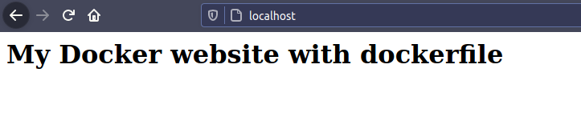

Creating your own image
There are two ways of creating an image: Commit and Dockerfile.
Commit
Create a container with:
$ sudo docker container run -it --name <container_name> <image_name> /bin/bash
You created and entered the container terminal. Install all you need and then type exit.
Stop the container:
$ sudo docker container stop <container_name>
It stopped the container, now we can create a custom image of this container:
$ sudo docker container commit <container_name> <new_image_name>
Finished, type sudo docker images to see your new image!
Dockerfile
Dockerfile has the advantage to be an archive, so you can save this file somewhere and just build it to have your custom image. In commit mode you should install everything manually.
To create an image with Dockerfile, create a empty folder and inside it create a file named Dockerfile. Inside this file you can configure the image how you want.
As example, i will deploy this little project with nginx:
<html>
<body>
<h1>My Docker website with dockerfile</h1>
</body>
</html>
My dockerfile looks like this:
FROM nginx
LABEL version="1.0.0" description="Nginx website example" maintainer="Leonardo Zanotti <leonardojosezanotti@gmail.com>"
RUN cd / && mkdir Files && chmod 777 -R Files/
COPY ./index.html /usr/share/nginx/html/
ADD http://geolite.maxmind.com/download/geoip/database/GeoLite2-Country.tar.gz /temp/
VOLUME /Files/
EXPOSE 80
ENV API_URL=http://localhost:8000/api/
ENV API_DB=my_site
WORKDIR /usr/share/nginx/html/
ENTRYPOINT ["/usr/sbin/nginx"]
CMD ["-g", "daemon off;"]
The uppercase text are the docker commands (it doesnt need to be uppercase, its just for organization). The docker commands used are:
FROM: It tells which image we are modifing, because a dockerfile is a modification of an existing image. Its common to use a whole linux distribuition in this field likedebian:jessie.LABEL: Some informations about the image.RUN: Commands to be runned when the container starts. Here is just an example of creating folder, but you can install dependences here withsudo apt install(if you are using a image that runs on debin derivade linux).COPY: It copies files/folders from our machine to container. So here im using the copy to replace the index.html in nginx folder by my project.ADD: Add is like a copy with more features. The principal feature is extract tar local files or by URL. Im using it as example to extract a tar file by URL to the temp folder.VOLUME: Create a point where we can both pass and receive files from container. So, the files storaged in /Files will be storaged in your machine too and we doesnt gonna lose any file.EXPOSE: The port of the connection. Nginx use the 80 by default.ENV: Enviroment variables.WORKDIR: Folder of work. Is where we enter after running the container and all the RUN commands really are runned.ENTRYPOINT: Defines a folder to execute the CMD command.CMD: Command to be executed. So, in this example, we are running/usr/sbin/nginx -g daemon off;(basically starting nginx).
Its interesting to see the Nginx dockerfile (which is our base image). It uses the ubuntu dockerfile as base image so if we want we can run apt commands in the RUN:
# Nginx Dockerfile
# https://github.com/dockerfile/nginx
# Pull base image.
FROM dockerfile/ubuntu
# Install Nginx.
RUN \
add-apt-repository -y ppa:nginx/stable && \
apt-get update && \
apt-get install -y nginx && \
rm -rf /var/lib/apt/lists/* && \
echo "\ndaemon off;" >> /etc/nginx/nginx.conf && \
chown -R www-data:www-data /var/lib/nginx
# Define mountable directories.
VOLUME ["/etc/nginx/sites-enabled", "/etc/nginx/certs", "/etc/nginx/conf.d", "/var/log/nginx", "/var/www/html"]
# Define working directory.
WORKDIR /etc/nginx
# Define default command.
CMD ["nginx"]
# Expose ports.
EXPOSE 80
EXPOSE 443
So, inside the folder you created (when your image is finished), you can build your image:
$ sudo docker image build -t <image_name> .
# sudo docker image build -t leonardozanotti/test-image .
Now, if you type sudo docker images you image will be there.
Then, we can run the image with:
# How our Dockerfile is fully configured, we dont need to pass the `-e` and the `-v` arguments in the docker run.
$ sudo docker run -d -p 80:80 --name image_name -e API_URL=http://api.mysite.com/api/ -v $PWD/Files:/Files/ full_image_name
# sudo docker run -d -p 80:80 --name test-image -e API_URL=http://api.mysite.com/api/ -v $PWD/Files:/Files/ leonardozanotti/test-image
At the end, just open localhost:80 to see the project:

References
Criando minha primeira imagem com docker